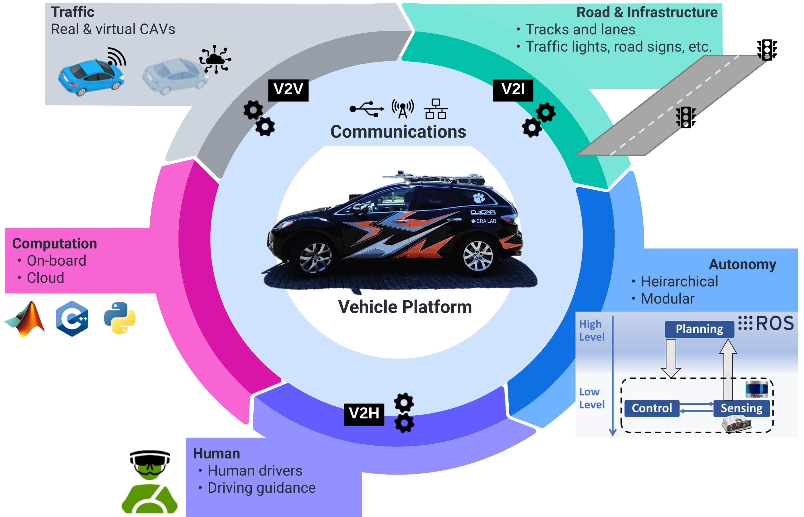

Learning Augmented Model-Based Optimization Controls (2022-2024)
Advisor: Dr. Yunyi Jia, Associate Professor, Clemson University
Funding: Department of Defense through VIPR-GS
- Research aims to reduce data dependency by leveraging nominal models and increasing generalization of the controller across different driving conditions
- Formulated and investigated a hybrid reinforcement learning architecture to handle modeling mismatches and unmodeled system dynamics
- Validating in simulation and on a drive-by-wire Polaris RZR vehicle on off-road terrains
Energy Efficient Cooperative Driving (2022-2024)
Advisors: Dr. Yunyi Jia, Dr. Ardalan Vahidi, Clemson University
Funding: Department of Energy through Argonne National Laboratory
- Research aims to improve energy efficiency through V2V, V2I connectivity by informing lane switching and acceleration strategy on connected traffic corridors
- Experimental results on an in-house drive-by-wire Mazda CX7 showed up to 36% improvements
- Expert skills for on-vehicle control deployment using MPC and other state-of-the-art controllers

Conditional GAN for Video Frame Prediction
We build upon the ideas from Retrospective Cycle GAN (Kwon et al). They established great performance compared to the SOTA with their forward and backward temporal consistency idea for training the generator. However, they do not consider any conditionong on physics or restrict the movement of pixels expicitly. We ask the following quesiton: "Can we improve blurring in longer term predictions through the use of physics constraints?"
Future Video Frame Prediciton performance with conditional GAN is shown in the above image. More details can be found in the project webpage:
Deep Orange 13 (2021-2022)
Advisor: Dr. Chris Paredis, Professor Emeritus, Clemson University
Funding: Department of Defense through VIPR-GS
- Implemented fully autonomous navigation for off-road driving using cameras, lidars, GNSS over ROS (Robot Operating Software) on small and full-scale platforms
- Designed and developed in-house Drive-by-Wire vehicle controls architecture using New Eagle Raptor controller and ROS with C++ and Python
- H-i-L and S-i-L testing for vehicle controls
- Communications and vehicle networking using CAN, Ethernet, wireless short-range communications
- Autonomous Driving:
- Manned Autonomous:
Collaborative Monitoring of Road Conditions (2021-2022)
Advisor: Dr. Yunyi Jia, Clemson University
Funding: SC Department of Transportation
- Research aims to utilize deep learning and cloud architecture to augment road condition monitoring
- Object detection neural networks were trained to identify road defects that need attention using just smartphone sensors like IMU and camera.
-
Research poster:
Hexapod Inverse Kinematics (2021)
Advisor: Dr. Venkat Krovi, Professor, Clemson University
- Implemented a planar cable robot and designed a controller using Quanser’s Hexapod hardware in HiL simulation
- Formulated inverse and forward kinematics for the cable robot